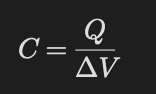
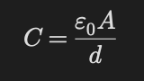
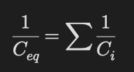
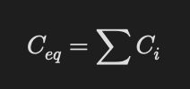

Sığa ve Dielektrikler
Temel Mantık
Kondansatörler elektrik yükü ve enerji depolayan devre elemanlarıdır.
Sığa (kapasitans):
bir kondansatörün ne kadar yük depolayabildiğini gösterir.
Kapasitans Tanımı

- C → sığa
- Q → yük
- ΔV → potansiyel farkı
Birim:
Farad (F)
Paralel Levha Kondansatör

- A → levha alanı
- d → levhalar arası uzaklık
Kapasitansı Artıran Şeyler
- Alan artarsa C artar
- Mesafe azalırsa C artar
- Dielektrik eklenirse C artar
Seri Bağlı Kondansatörler

- Yükler eşittir
- Gerilim paylaşılır
Paralel Bağlı Kondansatörler

- Gerilimler eşittir
- Yük paylaşılır
Soru Çözme Taktiği
- Seri mi paralel mi belirle.
- Eşdeğer sığayı bul.
- Yük mü gerilim mi sabit kontrol et.
- Enerji formülünü uygun seç.
- Dielektrik varsa κ kullan.
- Seri ve paraleli karıştırmak
- Pil bağlı mı değil mi unutmak
- Enerji formülünü yanlış seçmek
- Yük paylaşımını yanlış yapmak
- Dielektrik eklenince her şey artar sanmak